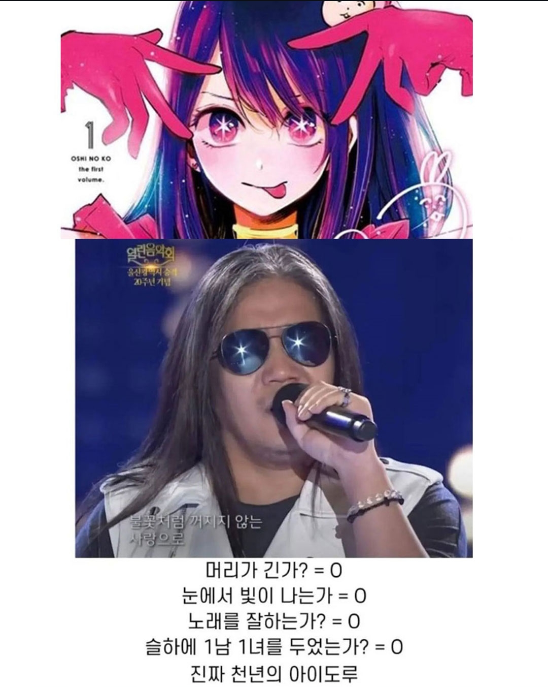

칼빵 맞으심?
칼빵 놓는놈은 단모종이 처리함
오 불꽃처럼 꺼지지않는 사랑 ㄷㄷ
https://www.dogdrip.net/dvs/d/26/09/17/c21ce3c8d4e72636ede00c90da7c7774.jpg
최애의롹커지
호시노 완규
(주인공 아님)
썸네일장난치면 못써
천년의 아이도루 ㅋㅋㅋㅋㅋㅋㅋㅋㅋㅋ
분명 썸넬은 장모종이 아니었는데?
이상하다 썸네일에선 이쁜 여자아이돌같았는데…
썸넬은 이게 아니였는데
센넨노 아이 ㄷㄷㄷ
호시노 아이(星野アイ) : 星[별 성]
박완규(朴完奎) : 奎[별 규]
둘 다 이름에 별이 들어감
썸네일사기 씨발!
아니 ㅋㅋㅋㅋㅋㅋ
노래도 천년의사랑